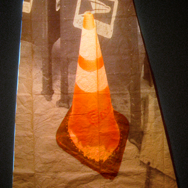
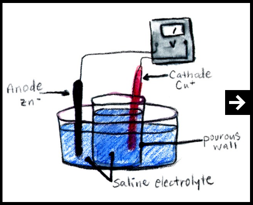
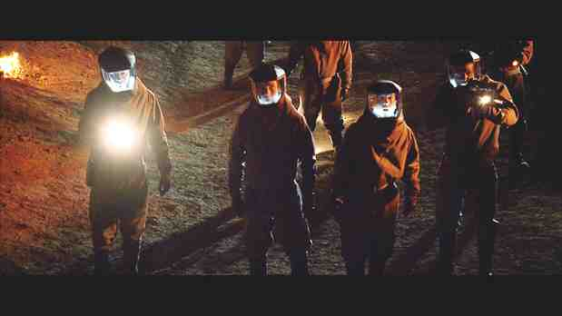
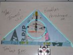

people doing strange things with electricity
The 1,618,033rd dorkbot-nyc meeting took place at 7pm on Wednesday, April 1st, 2009 at Location One in SoHo.
The meeting was free and open to the public. Please brought snacks to share. Someone ordered a load of pizzas!
Theme songs were played.
It featured the divine and proportionate:
Douglas's images

Erik Sanner: Paintings that Move, Spring Planting, and How to Enjoy Traffic Cones
Why make art when every day we encounter strikingly beautiful, impenetrable objects of infinite interpretation? The aesthetic practice of traffic cone viewing is as rewarding as visiting a gallery or museum. However, by simultaneously engaging in traffic cone appreciation and collaborative artmaking, I believe we can each experience a unique "hey!" moment.
http://www.eriksanner.com
Daniela Kostova & Olivia Robinson: Waste to Work
Waste to Work explores the transformation of labor into electric power, using sweat as the link. Sweat is the perfect medium: it is an electrolyte that can be used to make galvanic batteries - "waste" that can be harvested from our labors - and remains an extremely personal commodity that holds our scent, essential salts, fats, pheromones. This project has multiple phases: building sweat batteries and sweat harvesting suits.
http://www.iamwhateveryouwantmetobe.com/site/waste-work
Dwayne Johnson: Race to Witch Mountain
For years, stories have circulated about a secret place in the middle of the Nevada desert, known for unexplained phenomena and strange sightings. It is called Witch Mountain, and when a Las Vegas cab driver (Dwayne Johnson) finds two teens with supernatural powers in his cab, he suddenly finds himself in the middle of an adventure he can't explain. When they discover that the only chance to save the world lies in unraveling the secrets of Witch Mountain, the race begins, as the government, mobsters and even extraterrestrials try to stop them.
http://www.dwaynejohnsonfever.net
Breck Baldwin and Splinter: The Towel
The Towel is a scratch built model airplane consisting of foam, trash, $100 worth of motor/prop/rc gear etc and 3 hours building time. It flies great and its primary goal is to channel everyone's inner 8 year old. It also serves as the foundation for an excellent night flier (to be demonstrated), aerial video vehicle and has excellent repairability and crash tolerance.
http://brooklynaerodrome.com
NEXT MEETING: 06 May 2009